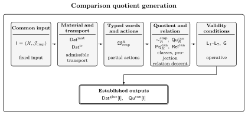
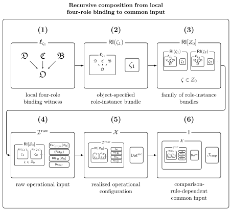
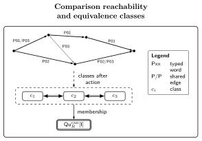
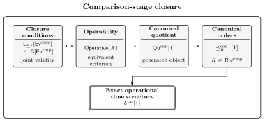

In this chapter
4.1 Generation of the Canonical Comparison Quotient
4.1.1 Definition of the Comparison-Stage Construction
From the realized operational configuration, extract the reception network used at the comparison stage, the source-side token families, the comparison-arrival maps, the comparison-side recovery maps, and the comparison-side and source-side relations; combine these with the typed family of comparison rules to construct the comparison-stage material datum. From the comparison-admissible inputs specified by the family of comparison rules, define source-identification partial maps, comparison-transport components, typed finite words and their induced partial actions, realizations of local closed-loop specifications, comparison-reachability equivalence relations, component quotients, canonical projections, and comparison two-role relations on the quotients. When the seven comparison-stage conditions and the condition on all pure-transport closed loops hold, construct the comparison-gluing datum and the canonical comparison quotient from the generated comparison-stage objects.
In this chapter, the compound superscript on an object specific to the comparison stage is abbreviated to only when the symbol root together with uniquely determines its comparison-stage membership. To distinguish it from the source-side relation , however, retains its complete form.


For each symbol root, one pair consisting of a role type and a reception phase first appears in complete form. Thereafter, only the reception-phase subscript is omitted within the same definition, proposition, or proof when the reception phase is fixed and the complete form is uniquely recoverable. The complete forms are retained for the role type, a varying family index, distinct reception phases, and residual modifiers that select genuine branches.

Formulas in the figure

![\begin{gathered}\mathsf{Dat}^{\mathrm{mat}}\\[-1.0pt]
\mathsf{Dat}^{\mathrm{tr}}\end{gathered}](math-S4/88dd7abdc424bf68f55b7b99ab2049b895560f62a5510af5ce6da0142da64712.svg)

![\begin{gathered}\sim_{R}^{\mathrm{cmp}}\mathchar 44\relax\allowbreak\ \mathsf{%
Qu}^{\mathrm{can}}_{R}\\[-1.0pt]
\mathsf{Prj}^{\mathrm{can}}_{R}\mathchar 44\relax\allowbreak\ \mathsf{Rel}^{%
\mathrm{can}}\end{gathered}](math-S4/29b9672c17b63c47ef2bacfaa70bfa358b5fbac99d95bef2a4e2de13463c7b8f.svg)
Definition 4.1 (Comparison-Rule-Dependent Common Input).
For the realized operational configuration
of Definition 3.25 and the typed family of comparison rules

define the comparison-rule-dependent common input by
For any object dependent on this input, define the evaluation notation by

![\mathsf{RI}[Z_{0}]](math-S4/ee7ef67d6a003ae660de689eb8a958190c02ebcf3d82a3440f3e54e966cc3c22.svg)


Formulas in the figure


![\mathsf{Rlz}_{\mathfrak{B}}[Z_{0}]](math-S4/3600624123d11f81a4795a1ae30416eb9a3a6b4e0a08942ac7ceb54da4bafb98.svg)


Definition 4.2 (Comparison-Stage Material Datum).
Let the comparison-rule-dependent common input of Definition 4.1 be

Define the comparison-stage material datum by
![\displaystyle\mathsf{Dat}^{\mathrm{mat}}\left[\mathsf{I}\right]](math-S4/404ee8462c0642a74b213fc66a5765d68e2e2f90fd487ef9528bd6a676ac572c.svg)

The first component is the observer-side reception network, the second is the source-side token family, the third is the family of comparison-arrival maps, the fourth is the family of comparison-side recovery maps, and the fifth is the ordered pair comprising the family of comparison-side relations and the source-side relation. The sixth component is the typed family of comparison rules that specifies comparison-admissible position pairs, input synchronized-pair joint-transport relations, and local pure-transport closed-loop specifications.
4.1.2 Comparison-Stage Decision Conditions
Definition 4.3 (Comparison-Admissible Position Pairs and Input Synchronized-Pair Joint-Transport Relations).
Let the comparison-stage material datum of Definition 4.2 be
Let the set of comparison-admissible position pairs specified by the typed family of comparison rules
be
![\operatorname{Adm}_{\mathrm{cmp}}\left[\mathsf{I}\right]\subseteq U\times U](math-S4/b7f4a6e4498ad696abd2913a42ce0c8897c10ce3048d385567b5267f215f346d.svg)
For each
![(u\mathchar 44\relax\allowbreak v)\in\operatorname{Adm}_{\mathrm{cmp}}\left[%
\mathsf{I}\right]](math-S4/c88c34b5fc970c5e59689ff8bb7c98ea5e31dfed7827d90f4bd8d349a8e4b994.svg)
let the input synchronized-pair joint-transport relation specified by the typed family of comparison rules be
![\displaystyle\mathsf{Tr}^{\mathrm{pair}}_{uv}\left[\mathsf{I}\right]](math-S4/85daaa890aaa0ed8099c7450d9cff3fec549fc64449ad33501d557665d876c01.svg)
The flattening of an element of this product space is given by

Definition 4.4 (Family of Local Pure-Transport Closed-Loop Specifications).
Let the comparison-stage material datum of Definition 4.2 and the set of comparison-admissible position pairs of Definition 4.3 be given. For each

let the family of local pure-transport closed-loop specifications specified by the typed family of comparison rules
be
![\mathsf{LoopSpec}^{R}_{\mathrm{loc}}\left[\mathsf{I}\right]](math-S4/dcc868bbcd5eb325872743f5f9831080556f9e32c56af8747b2383c94775bda7.svg)
The family of local pure-transport closed-loop specifications satisfies
![\displaystyle\mathsf{LoopSpec}^{R}_{\mathrm{loc}}\left[\mathsf{I}\right]](math-S4/daa342b7e564068ad70d655ebb53eb26e792a7f3b13c87cab2111a459e7c4bdc.svg)


![\displaystyle\quad\vee\left(\varepsilon_{j}=-\wedge(u_{j}\mathchar 44\relax%
\allowbreak u_{j-1})\in\operatorname{Adm}_{\mathrm{cmp}}\left[\mathsf{I}\right%
]\right)\mathchar 44\relax\allowbreak](math-S4/66367f586a2250bbf247af8589584de21261ed54276ece2e859e1e0612cca2d1.svg)

For each
define the base point of the local closed-loop specification by

Definition 4.5 (Comparison-Stage Decision Condition : Local Source Identification).
Define the local source-identification condition by

Lemma 4.6 (Local source identification and mutually inverse arrival and recovery maps).
The condition is equivalent to injectivity of the comparison-side arrival map on its domain for every and . Under this condition, for every and every


the following relations hold.


Proof.
By Definition 3.21, consists of those points in the image of the comparison-side arrival map whose inverse images are singletons. Containment of the entire arrival image in this set is equivalent to injectivity on the domain. Under , the recovery map is defined on the entire arrival image and returns the unique preimage of each arrival point. Its value therefore belongs to the arrival-map domain, and the two composition identities follow. ∎

Definition 4.7 (Comparison-Stage Condition-Family Evaluation Specification).
Define the comparison-stage condition-family evaluation specification by
Define each component by
For each
define the bracket evaluation of a comparison-stage condition by
Define the first-stage established-condition bundle by
Definition 4.8 (Source-Matching Partial Maps).
Assume . For arbitrary

define


Define the source-matching partial map

by
Lemma 4.9 (Mutual Inverseness and Partial Injectivity of the Source-Matching Partial Maps).
Under , for arbitrary
and

one has

and
Consequently, and are partially injective and are mutually inverse partial maps.
Proof.
Take , , and


Set
Lemma 4.6 gives

and therefore

Furthermore,


This proves one direction of the asserted equality between the image and the domain of the reverse map, together with the composition identity.
The ordered pair may be either or . Thus the preceding inclusion and composition identity hold in both directions. The two inclusions give equality between the image and the domain of the reverse map; the two composition identities show that the maps are mutually inverse partial maps and that each is partially injective. ∎

Definition 4.10 (Set of Component-Factorization Tuples for Synchronized-Pair Joint Transport).
For each
![(u\mathchar 44\relax\allowbreak v)\in\operatorname{Adm}_{\mathrm{cmp}}[\mathsf%
{I}]](math-S4/7cf04d5367f0e50c0c5562d98d244719a5a3eaf36967447165dce7776349de5e.svg)
define the set of component-factorization tuples for synchronized-pair joint transport by
![\displaystyle\mathsf{TrFac}^{\mathrm{cmp}}_{uv}[\mathsf{I}]](math-S4/d6c7a99b2928897d26d7afe423e2008d1acbdf85fe9b28f5af06b1f78cde13ac.svg)


![\displaystyle\qquad\mathsf{Tr}^{\mathrm{pair}}_{uv}[\mathsf{I}]](math-S4/978546bf718e6f838a5211a318c1906756e18d8bbe676750ff8f247644a122fc.svg)
Definition 4.11 (Comparison-Stage Decision Condition : Component Factorization of Synchronized-Pair Joint Transport).

Define the synchronized-pair joint-transport component-factorization condition by
Define the second-stage established-condition bundle by
Suppose that

and
hold. For each
define the unique role-indexed transport datum by
![\displaystyle\mathsf{Dat}^{\mathrm{tr}}_{uv}\left[\mathsf{I}\right]](math-S4/85b8d352274a6ca12f2f4f69e1ca5df87b4e3750f092bea4e139a728047852f9.svg)
The first component satisfies
![\mathsf{PairDom}_{uv}\left[\mathsf{I}\right]\subseteq\prod_{R\in\mathsf{Rol}^{%
\mathrm{cmp}}}\operatorname{Im}\left(\mathsf{Arr}^{\mathrm{cmp}}_{R\mathchar 4%
4\relax\allowbreak u}\right)](math-S4/12d2629327f2c64abe5fdc1bf70fe118ade518e6c504e512ef9c20bb01644f11.svg)
For each
the second component satisfies
![\displaystyle\mathsf{Tr}^{R}_{uv}\left[\mathsf{I}\right]](math-S4/34f82a34dc94040cb9196d0a250c68728a0ee3681e680dff83ee54f366d91e68.svg)
![\displaystyle:\operatorname{pr}_{R}\left(\mathsf{PairDom}_{uv}\left[\mathsf{I}%
\right]\right)\hookrightarrow\operatorname{Im}\left(\mathsf{Arr}^{\mathrm{cmp}%
}_{R\mathchar 44\relax\allowbreak v}\right)](math-S4/440fb982ffa393eae378e3c4c72a87de64261fcb312d150d7513ab44898edd24.svg)
Moreover,
![\displaystyle=\Biggl{\{}\left((\alpha_{R})_{R\in\mathsf{Rol}^{\mathrm{cmp}}}%
\mathchar 44\relax\allowbreak\left(\mathsf{Tr}^{R}_{uv}\left[\mathsf{I}\right]%
(\alpha_{R})\right)_{R\in\mathsf{Rol}^{\mathrm{cmp}}}\right)\ \Biggm{|}](math-S4/d3e5a801ba11820baa534cc5aee9b22b3b63b72044d561321c78d0b8d1a8f664.svg)
![\displaystyle\qquad(\alpha_{R})_{R\in\mathsf{Rol}^{\mathrm{cmp}}}\in\mathsf{%
PairDom}_{uv}\left[\mathsf{I}\right]\Biggr{\}}.](math-S4/2fe89229435e1e85e5c4d0250e28f0a7710627497c98c7a0688e6c5661dce383.svg)
Definition 4.12 (Comparison-Transport Datum).
Assume
and
Define the comparison-transport datum by
![\displaystyle:=\left(\mathsf{Dat}^{\mathrm{tr}}_{uv}\left[\mathsf{I}\right]%
\right)_{\begin{subarray}{c}(u\mathchar 44\relax\allowbreak v)\in\operatorname%
{Adm}_{\mathrm{cmp}}\left[\mathsf{I}\right]\end{subarray}}](math-S4/995faf6e3cf39725f92f04bea8e15771be995f4813ba89e4c0fa87e6d57d9643.svg)
Definition 4.13 (Tagged Comparison-Arrival Reception Spaces).
For each
define the tagged comparison-arrival reception space by
Definition 4.14 (Tagged Lift of a Partial Injection).
For arbitrary

and a partial injection , define the tagged lift
![\displaystyle\mathsf{TagLift}_{uv}[f]](math-S4/d9e2c68d0634ad409d75f9cb13c08f7dc565df74c96ea31a3c868a3798a891cf.svg)

by
Lemma 4.15 (Compatibility of Tagged Partial-Injection Lifts with Inverses).
For any partial injection and its inverse on its image,

![\left(\mathsf{TagLift}_{uv}[f]\right)^{-1}=\mathsf{TagLift}_{vu}\left[f^{-1}%
\right].](math-S4/5cae4198d123ca8c02b882c36d6a8a84caa6c6aa9a6e0d6c99e432632a69ed4a.svg)
Consequently,
![\displaystyle\mathsf{TagLift}_{vu}\left[f^{-1}\right]\circ\mathsf{TagLift}_{uv%
}[f]](math-S4/efbef0a5c73d76f567c81e1b00764a5ae32f47b1c2ca03138c34b68f5625f488.svg)
![\displaystyle=\operatorname{id}_{\operatorname{Dom}\left(\mathsf{TagLift}_{uv}%
[f]\right)}\mathchar 44\relax\allowbreak](math-S4/008ac54be79e9dbadf8ce740253dde238c275547ba08f6f011816930f95aba88.svg)
![\displaystyle\mathsf{TagLift}_{uv}[f]\circ\mathsf{TagLift}_{vu}\left[f^{-1}\right]](math-S4/06c9d2a4a7f43bfa1d930ab5994ee2695e0d86499c25f29a2207e5859d4d9c71.svg)
![\displaystyle=\operatorname{id}_{\operatorname{Im}\left(\mathsf{TagLift}_{uv}[%
f]\right)}.](math-S4/b1f2b4e945cf1815b2c4c1b30b60169263cfabcba275b17d45dcd1174bb54ea7.svg)
Proof.
The domains of the two sides coincide with

For arbitrary

Definition 4.14 gives

.](math-S4/d1e4c4d0602908165b31077a978928766f36e5ce0b1adf7a07441779458d364e.svg)
The two maps therefore coincide. The two composition identities follow from the definition of an inverse map. ∎
Definition 4.16 (Pure-Transport Terms and Formal Inverse Terms).
Assume
and
For arbitrary

![\displaystyle(u\mathchar 44\relax\allowbreak v)\in\operatorname{Adm}_{\mathrm{%
cmp}}\left[\mathsf{I}\right]](math-S4/4c9fa70aaa83db10b40f902dd76b691f6f338f2b0d186fb862fb329ebd8beddc.svg)
define the forward pure-transport term by
![\displaystyle\mathsf{EdgeTerm}^{\mathrm{tr}\mathchar 44\relax\allowbreak R%
\mathchar 44\relax\allowbreak+}_{uv}\left[\mathsf{I}\right]](math-S4/1e99b89da94acf4d9d3300c6fd430f7c8e936f04922e4dbccb07756edc7ab646.svg)
![\displaystyle:=\mathsf{TagLift}_{uv}\left[\mathsf{Tr}^{R}_{uv}\left[\mathsf{I}%
\right]\right]](math-S4/bfc6d5b65ebd03b5a1803590a24741935cc52c0355cb4ed277bf2ce4e30f9bc1.svg)
Define the formal inverse pure-transport term by
![\displaystyle:=\left(\mathsf{EdgeTerm}^{\mathrm{tr}\mathchar 44\relax%
\allowbreak R\mathchar 44\relax\allowbreak+}_{uv}\left[\mathsf{I}\right]\right%
)^{-1}](math-S4/e200391dc283668d64cf0a8d5e6883b549a5d58f767dbc493841fc30850b5a48.svg)
![\displaystyle=\mathsf{TagLift}_{vu}\left[\left(\mathsf{Tr}^{R}_{uv}\left[%
\mathsf{I}\right]\right)^{-1}\right]](math-S4/5eea7cdda7ae757c4f325e7f23a042a1a54cf301df8d52f8c610b43060330c23.svg)
Lemma 4.17 (Mutual Inverseness of Pure-Transport Terms and Formal Inverse Terms).
For each term in Definition 4.16, for the two choices of and the corresponding opposite sign ,
Proof.
![f=\mathsf{Tr}^{R}_{uv}\left[\mathsf{I}\right]](math-S4/7cfe38103ee4211184462ab0b7d613dc4f772eb085f4ca4dbe2d49064446edeb.svg)
Definition 4.18 (Source-Matching Terms).
Assume
For arbitrary
define the source-matching term by
Lemma 4.19 (Mutual Inverseness of Source-Matching Terms).
For each term in Definition 4.18 and arbitrary
one has


Because the domain of the inverse map is the image of the original map, the two ordered pairs in the second identity give the two composition identities.


Definition 4.20 (Typed Finite Partial-Injection Sequence Action).
For sets and partial maps


define their composition by

For each , each sequence of sets , and each sequence of partial injections


define the typed finite partial-injection sequence action by
![\displaystyle\mathsf{SeqAct}[()_{Y_{0}}]](math-S4/8515e76fb1e76537243a1b746a3c589b79bd0f9db866bc47a7ef8930adf8288e.svg)

![\displaystyle\mathsf{SeqAct}[(f_{j})_{j=1}^{m}]](math-S4/b2029ec8c2d32971f1719d835966391ee015a6562e5836955a306d8e62ed96c8.svg)

Its maximal domain and value satisfy
![\displaystyle\operatorname{Dom}\left(\mathsf{SeqAct}[(f_{j})_{j=1}^{m}]\right)](math-S4/7bebe82975fbf9279b11c1f50d002b63ae3729986b9800a2308907af4ef4e61a.svg)


Lemma 4.21 (Action Laws for Typed Finite Partial-Injection Sequences).
For each and two type-compatible sequences and , define the concatenated sequence and the inverse sequence by


Then
![\displaystyle\operatorname{Dom}\left(\mathsf{SeqAct}[(h_{\ell})_{\ell=1}^{m+n}%
]\right)](math-S4/ea62d90a2de50741e8a59ec4ffb0253403dc0625a24f3d0e222134aea4aacf78.svg)
![\displaystyle\mathsf{SeqAct}[(h_{\ell})_{\ell=1}^{m+n}]=\mathsf{SeqAct}[(g_{k}%
)_{k=1}^{n}]\circ\mathsf{SeqAct}[(f_{j})_{j=1}^{m}]\mathchar 44\relax\allowbreak](math-S4/bcb3f1a1a86a7b158119fa7c9cf2b829dd6975bfc4b98bcbe23368927e944ac8.svg)
hold. In addition, is a partial injection.
Proof.
The partial-map composition and associativity in Definition 4.20 give the domain equality and the composition law. When , the empty-sequence action is the identity map, so the inverse-sequence law holds. When ,
gives the inverse-sequence law. The existence of an inverse partial map gives partial injectivity. ∎
Definition 4.22 (Abstract Typed Atomic-Action System).
In this subsection, an atomic action is a one-stage partial action forming one component of a typed finite word. An atomic kind represents its action kind, and an admissible atom represents an admissible triple of atomic kind, initial position, and terminal position. Define an abstract typed atomic-action system by
Here, is the position set, is a family of underlying sets, is the set of atomic kinds, and


is the set of admissible atoms.
For each

the map

is a partial injection.
The inverse correspondence

satisfies


Definition 4.23 (Abstract Typed Finite Words and Induced Partial Actions).
Take the abstract typed atomic-action system of Definition 4.22. Define the family of typed finite words by


Two words are equal when their respective components—length, position sequence, and atomic-kind sequence—are equal.
For each
define the word length, initial type, terminal type, and atomic-kind support by


For each
define the closed-loop subfamily constructor by
For each and each , define

and define the induced partial action by
The type of this partial action is
For an arbitrary partial self-map on a set ,


define the fixed-point set by
For each , define the empty word by
Write two words as


When , define the concatenated word that acts first by and then by by


where


For each , define the inverse word by
Lemma 4.24 (Action Laws for Abstract Typed Finite Words).
For each ,

![\mathsf{Act}_{\mathfrak{W}}[\mathbf{w}]](math-S4/9e8880bceb4617ddddaa865bd324782f950ade9a4baa985d932eeb3843633cc7.svg)
is a partial injection, and
![\mathsf{Act}_{\mathfrak{W}}[\mathbf{w}^{\dagger}]=\left(\mathsf{Act}_{%
\mathfrak{W}}[\mathbf{w}]\right)^{-1}](math-S4/1a4bb38393776e07573e096f400fd045023d594632e92841ffee9ba6ce25464d.svg)
holds. For each ,
holds.
Let , and suppose that the terminal position of equals the initial position of . Then
![\displaystyle\mathsf{Act}_{\mathfrak{W}}[\mathbf{w}_{1}\star\mathbf{w}_{0}]=%
\mathsf{Act}_{\mathfrak{W}}[\mathbf{w}_{1}]\circ\mathsf{Act}_{\mathfrak{W}}[%
\mathbf{w}_{0}]](math-S4/c958d4e14e9ff727018fb97ccd6b06d85f717abb21a02d976c8dff911198b216.svg)
hold.
Definition 4.25 (Orbit Relation of Abstract Typed Word Actions).
For the abstract typed atomic-action system of Definition 4.22, define the orbit relation

for arbitrary
by

![\displaystyle x\in\operatorname{Dom}\left(\mathsf{Act}_{\mathfrak{W}}[\mathbf{%
w}]\right)\mathchar 44\relax\allowbreak](math-S4/e68713d57f696ba4a8ef04491169634c9c5c8b9789f2be5fa92e359a83f89a8d.svg)
Lemma 4.26 (Equivalence-Relation Property of the Orbit Relation of Abstract Typed Word Actions).
If
holds for arbitrary , then
is an equivalence relation on

Proof.

Next, for
let the witness be . The inverse-word action law in the same lemma makes a witness of

Finally, for
let the respective witnesses be . The action types give

Disjointness of the type domains therefore gives

The concatenated word is defined, and the concatenated-action law in the same lemma gives

=z.](math-S4/2755e847b95e4cf01322be731917e1bd9bed1c338d73904a674e9b41d38db9e4.svg)
Hence

The orbit relation is thus reflexive, symmetric, and transitive. ∎
Definition 4.27 (Saturation of a Subset along an Equivalence Relation).
For a set , an equivalence relation on , denoted by , and a subset , define the saturation predicate by


![\displaystyle\Longleftrightarrow\Bigl{[}\forall p\mathchar 44\relax\allowbreak
q%
\in S\mathchar 44\relax\allowbreak\quad p\mathrel{\sim}q\Longrightarrow\left(p%
\in S_{0}\Longleftrightarrow q\in S_{0}\right)\Bigr{]}](math-S4/d8b5b686cd0fafd075decaaf032d13bc7c5a409c9c88119ad7522bb43a2fb061.svg)
Lemma 4.28 (Complete Pullback and Minimality of the Image of a Saturated Set).
Let be sets, let an equivalence relation on be denoted by , and suppose that a map

satisfies, for arbitrary ,
If a subset satisfies

then
![\pi[S_{0}]\subseteq T](math-S4/b699bdda7c1acfe3182ac58e5b96edb50322180d442946681455f9f7a1ae3379.svg)
and, for arbitrary ,
![\pi(x)\in\pi[S_{0}]\Longleftrightarrow x\in S_{0}](math-S4/0570c79209aac11599cd77c0f194f781458db0936454ce222a428726f095060b.svg)
hold.
Furthermore, for arbitrary ,

![\left[\forall x\in S_{0}\mathchar 44\relax\allowbreak\quad\pi(x)\in A\right]%
\Longrightarrow\pi[S_{0}]\subseteq A.](math-S4/2ad1cc85db21dcc4b9f6b34bad7f5d49b660037f299e631319ec44aca21eeddf.svg)
Thus is the unique minimal subset containing the entire image of .
![\pi[S_{0}]](math-S4/99766505246f4561f0104da5cbd4cbd74da8194719acf31a81fb83cbf58830fb.svg)
Proof.
The definition of an image gives
![\pi[S_{0}]\subseteq T.](math-S4/8139d44318ab3726aaa82133dc8bac0cfef3bdebda8d6ed0099254e41efa741f.svg)
If , the same definition gives
![\pi(x)\in\pi[S_{0}].](math-S4/95d4d58ce5d2ee7c58cad7efac3215e078074882aaeb9798858bb8137bf2672c.svg)
Conversely, suppose
By the definition of an image, some satisfies
The fiber condition gives
From
and , it follows that .
Finally, suppose that satisfies
For arbitrary , some satisfies , and hence . Therefore
If there are two minimal subsets, mutual inclusion makes them equal. ∎
Definition 4.29 (Identity-on-Domain Predicate).
For a partial self-map on a set ,
define the identity-on-domain predicate by

Definition 4.30 (Equivalence Classes and the Canonical Quotient Projection).
For a set and an equivalence relation on it, define
![\displaystyle[x]_{\sim}](math-S4/3fab9b5eff78b86f25cd3293f8a1d63bd4013bd16e98e689c0e788316c9c688f.svg)

Define the canonical quotient projection by
![q_{\sim}:S\longrightarrow S/\!\sim\mathchar 44\relax\allowbreak\qquad q_{\sim}%
(x):=[x]_{\sim}](math-S4/575f36351a1759ffd48eed5cc509632d3ec113d0099b34f7a64ec482d5552b66.svg)
Lemma 4.31 (Surjectivity and Equivalence-Class Criterion for the Canonical Quotient Projection).
The canonical quotient projection of Definition 4.30 is surjective and, for arbitrary ,
Proof.
Every equivalence class has the form for some ; hence is surjective.
![[x]_{\sim}](math-S4/b4b15f42e04dfd679145237d7068ba926aed348085c2e65e78e9a6b07f6f5824.svg)
Suppose . Reflexivity gives , and therefore . Thus , and symmetry gives .
![x\in[y]_{\sim}](math-S4/2ec6d4b26d6a60ae650ab64c9090c9006a17a242dad42bc6c548d333268ff81b.svg)

Conversely, suppose . Symmetry and transitivity give, for arbitrary ,
Extensionality gives . ∎
Definition 4.32 (Closed-Word Identity-Action Predicate).
For an abstract typed atomic-action system , define the closed-word identity-action predicate by
Theorem 4.33 (Closed-Word Identity Action and Injectivity of the Orbit Quotient Projection on Type Domains).
Suppose that, for arbitrary ,
Then
Proof.


=x.](math-S4/4d622cd30fa962b90133d0a638e78f02c78b84af5e4ea282e8663299883b8ed0.svg)


![x\in\operatorname{Dom}\left(\mathsf{Act}_{\mathfrak{W}}[\mathbf{w}]\right)](math-S4/5a09580693b1093f1452500507bf6a2c4600c05acb3002cba57fbed556555e0d.svg)

![\operatorname{Fix}\left(\mathsf{Act}_{\mathfrak{W}}[\mathbf{w}]\right)=%
\operatorname{Dom}\left(\mathsf{Act}_{\mathfrak{W}}[\mathbf{w}]\right).](math-S4/9f7e337d2ed8d5afa9c418524bea3d226178e84b7be7f465b36a91986ccb22c7.svg)
Definition 4.34 (Atomic-Kind Restrictions of an Abstract Typed Atomic-Action System).
Take the abstract typed atomic-action system of Definition 4.22. For an inverse-correspondence-invariant subset
define the atomic-kind restriction by


Definition 4.35 (Comparison-Stage Typed Atomic-Action System).
Assume
and
For each , define the underlying set at each by
Define the atomic-kind set and the atomic-kind sets used for restrictions by


![\displaystyle\qquad\operatorname{Adm}_{\mathrm{cmp}}(\mathcal{X};\mathcal{J}_{%
\mathrm{cmp}})]](math-S4/ff2817a1fd58b75a63a5c6e49d0e5f449cd934fe97ecc1119274132fcaf0f483.svg)

![\mathsf{AtomAct}^{R}_{\mathrm{cmp}}(\kappa;u\mathchar 44\relax\allowbreak v):=%
\begin{cases}\mathsf{EdgeTerm}^{\mathrm{tr}\mathchar 44\relax\allowbreak R%
\mathchar 44\relax\allowbreak+}_{uv}(\mathcal{X};\mathcal{J}_{\mathrm{cmp}})%
\mathchar 44\relax\allowbreak&\kappa=\mathsf{tr}^{+}\mathchar 44\relax%
\allowbreak\\
\mathsf{EdgeTerm}^{\mathrm{tr}\mathchar 44\relax\allowbreak R\mathchar 44%
\relax\allowbreak-}_{vu}(\mathcal{X};\mathcal{J}_{\mathrm{cmp}})\mathchar 44%
\relax\allowbreak&\kappa=\mathsf{tr}^{-}\mathchar 44\relax\allowbreak\\
\mathsf{EdgeTerm}^{\mathrm{src}\mathchar 44\relax\allowbreak R}_{uv}\mathchar 4%
4\relax\allowbreak&\kappa=\mathsf{src}\end{cases}](math-S4/0c843c3c2cb5445a1f903bdd3be911aa307c6026077ddb865c1dbb50e84c0ef8.svg)

Lemma 4.36 (Partition of the Comparison-Arrival Type-Domain Family).
Under , for each ,
![\mathsf{L}_{\leq 2}[\mathsf{Ev}^{\mathrm{cmp}}]](math-S4/4d837d0f970b759a204430ef55a4905f7e48c578f213eb81ba21388cd44ff17f.svg)

hold.
Definition 4.37 (Displayed Typed Finite Pure-Transport Words).
For each , define the following objects. For a transport-direction-encoded word

define
![\mathsf{Enc}^{\mathrm{tr}}[\mathbf{w}]:=\left(m\mathchar 44\relax\allowbreak(u%
_{j})_{j=0}^{m}\mathchar 44\relax\allowbreak(\kappa_{j})_{j=1}^{m}\right)%
\mathchar 44\relax\allowbreak\qquad\kappa_{j}:=\begin{cases}\mathsf{tr}^{+}%
\mathchar 44\relax\allowbreak&\varepsilon_{j}=+\mathchar 44\relax\allowbreak\\
\mathsf{tr}^{-}\mathchar 44\relax\allowbreak&\varepsilon_{j}=-\end{cases}](math-S4/1929935bd4fddd90b3840853202afda98df8917e2788a403a316c8747e50e02c.svg)
Define the family of all pure-transport words by
![\displaystyle\mathsf{Word}^{\mathrm{tr}}_{R}[\mathsf{I}]](math-S4/26990ad2a0b3c92fcf633d074193c53efa821ea3588387a6ef71197a62fdaf72.svg)
The transport-direction encoding is a bijection from the family of words on the left to the family on the right.
Definition 4.38 (Induced Partial Action of a Pure-Transport Word).
For each and each , define
![\mathbf{w}\in\mathsf{Word}^{\mathrm{tr}}_{R}[\mathsf{I}]](math-S4/10ffce4507ce101612f1187b1243c56867af5dac3a935f126eb6cb581f3d3ecd.svg)
![\displaystyle:=\mathsf{Act}_{\left.\mathfrak{W}^{R}_{\mathrm{cmp}}[\mathsf{I}]%
\right|_{\mathsf{Kind}^{\mathrm{tr}}}}[\mathsf{Enc}^{\mathrm{tr}}[\mathbf{w}]]](math-S4/3c55ddb33dffdcb0c345a034dadb44e209cf16ff74a4f986b9aa971660fe1a1d.svg)
Definition 4.39 (Empty, Concatenated, and Inverse Pure-Transport Words).
For each , define the following operations. For each , define the empty word by
For two words and whose terminal and initial positions agree,
define the concatenated word by
For an arbitrary pure-transport word , define the inverse word by
Lemma 4.40 (Compatibility of Pure-Transport Word Operations with Induced Partial Actions).
For each , the action system for pure-transport words defined by Definitions 4.38 and 4.39 is a special case of the abstract typed finite-word action system of Lemma 4.24. Consequently, the conclusions of that lemma for inverse-word actions, empty-word actions, concatenated-word domains, and composed actions hold.
Lemma 4.41 (Partial Injectivity of the Induced Partial Action of a Pure-Transport Word).
For each and each ,
![\mathsf{Act}^{\mathrm{tr}}_{R}[\mathsf{I}][\mathbf{w}]](math-S4/571e08f41e21edbfce385ef1e17faba3b55c876c1e5835c5c9847a964844bc84.svg)
is a partial injection.
Proof.
Apply Lemma 4.24. ∎
Definition 4.42 (Family of All Pure-Transport Closed-Loop Words).
For each , define
![\displaystyle\mathsf{LoopWord}^{\mathrm{tr}\mathchar 44\relax\allowbreak R}_{%
\mathrm{all}}[\mathsf{I}]](math-S4/468e367dbcd9ed568f2cc34f444ffc6622c1a83d2e664c3edce6d0caa0921b9f.svg)
![\displaystyle:=\left\{\mathbf{w}=\left(m\mathchar 44\relax\allowbreak(u_{j})_{%
j=0}^{m}\mathchar 44\relax\allowbreak(\varepsilon_{j})_{j=1}^{m}\right)\in%
\mathsf{Word}^{\mathrm{tr}}_{R}[\mathsf{I}]\ \middle|\ u_{m}=u_{0}\right\}](math-S4/bba9d5245b12d2a2d626fcc5f6344292749c86b47f8b589e9c46f55c768216bf.svg)
Definition 4.43 (Displayed Typed Finite Source-Matching Words).
For each , define the source-matching atomic-action system by
For a source-encoded word
define
Define the family of all source-matching words by
![\displaystyle:=\left\{\mathbf{v}\ \middle|\ \mathsf{Enc}^{\mathrm{src}}[%
\mathbf{v}]\in\mathsf{Word}\left(\mathfrak{W}^{R}_{\mathrm{src}}\right)\right\}](math-S4/b8367e903688b0baca7ff0658a7932f1f92298881edcbed4e39a4c046f78322f.svg)
The source encoding is a bijection from the family of words on the left to the family on the right.
Definition 4.44 (Induced Partial Action of a Source-Matching Word).
For each and each , define
Definition 4.45 (Empty, Concatenated, and Inverse Source-Matching Words).
For each , define the following operations. For each , define the empty word by
![\mathsf{Enc}^{\mathrm{src}}[\mathbf{1}^{\mathrm{src}}_{R\mathchar 44\relax%
\allowbreak u}]:=\mathbf{1}_{u}](math-S4/f0fa7337e0d18b589386fe38e613a0b3da3b6523cac5b28feca900585d070151.svg)
For two words and whose terminal and initial positions agree,

define the concatenated word by
For an arbitrary source-matching word , define the inverse word by

![\mathsf{Enc}^{\mathrm{src}}[\mathbf{v}^{\dagger}]:=\left(\mathsf{Enc}^{\mathrm%
{src}}[\mathbf{v}]\right)^{\dagger}](math-S4/96ad4a515b37c224040adccf1d85a9f79e4c427cf0f42b834463dd84f64771b1.svg)
Lemma 4.46 (Compatibility of Source-Matching Word Operations with Induced Partial Actions).
For each , the action system of source-matching words determined by Definition 4.44 and Definition 4.45 is a special case of the abstract typed finite-word action system in Lemma 4.24. Consequently, the conclusions of that lemma concerning inverse-word actions, empty-word actions, concatenated-word domains, and composite actions hold.
Lemma 4.47 (Partial Injectivity of the Induced Partial Action of a Source-Matching Word).
For each and each ,
![\mathsf{Act}^{\mathrm{src}}_{R}[\mathbf{v}]](math-S4/5478a606dc7b06edc16d208dcdc2c2d87934b1c95697676692eab3bbe58802c7.svg)
is a partial injection.
Proof.
Apply Lemma 4.24. ∎
Lemma 4.48 (Identity of a Source-Matching Word When Its Initial and Terminal Positions Coincide).
For each and each

if , then
holds.
Proof.
Take any
and set
By Definition 4.5 and finite induction, the corresponding stage sequence satisfies
The equality yields . ∎
Definition 4.49 (Displayed Typed Finite Extended Comparison Words).
For each , define
Each of its elements is displayed as
Definition 4.50 (Induced Partial Action of an Extended Comparison Word).
For each and each , define
Definition 4.51 (Empty, Concatenated, and Inverse Extended Comparison Words).
For each , define the following objects. For each , define the empty word by

For each whose terminal position coincides with the initial position of , where
define the concatenated word by the concatenation in Definition 4.23. For each extended comparison word , define the inverse word by the inverse-word construction in the same definition.


Lemma 4.52 (Compatibility of Extended Comparison Word Operations with Induced Partial Actions).
For each , the action system of extended comparison words determined by Definition 4.50 and Definition 4.51 is a special case of the abstract typed finite-word action system in Lemma 4.24. Consequently, the conclusions of that lemma concerning inverse-word actions, empty-word actions, concatenated-word domains, and composite actions hold.
Lemma 4.53 (Partial Injectivity of the Induced Partial Action of an Extended Comparison Word).
For each and each ,
![\mathsf{Act}^{\mathrm{ext}}_{R}[\mathsf{I}][\mathbf{e}]](math-S4/a7585881774c2b0a99afb21efc5dbd4206f90db74638c3799652a50004733504.svg)
is a partial injection.
Proof.
Apply Lemma 4.24. ∎
Definition 4.54 (Standard Embeddings of Pure-Transport Words and Source-Matching Words).
![\displaystyle\mathsf{Enc}^{\mathrm{tr}}:\mathsf{Word}^{\mathrm{tr}}_{R}[%
\mathsf{I}]](math-S4/bc15c71dbc66900e6507dad3f6845d8f543e22e561b9499fa4c1262eaf7a8301.svg)
![\displaystyle\hookrightarrow\mathsf{Word}^{\mathrm{ext}}_{R}[\mathsf{I}]%
\mathchar 44\relax\allowbreak](math-S4/b46cdf10eaecea3df54dced012496b5aae18b1a2598a107d93667c4633558285.svg)
![\displaystyle\hookrightarrow\mathsf{Word}^{\mathrm{ext}}_{R}[\mathsf{I}]](math-S4/75e20a84636563837a5fbb13ad4aa0390d2f764569451f37fec6c6756e98f627.svg)
Lemma 4.55 (Injectivity and Action Compatibility of the Standard Embeddings).
For each , the two standard embeddings are respectively injections
![\displaystyle\longrightarrow\mathsf{Word}^{\mathrm{ext}}_{R}[\mathsf{I}]%
\mathchar 44\relax\allowbreak](math-S4/c5b01b2a9438b0476c13b295b5d24465ba7792f551d3c6d5ad7d3c8213cfc458.svg)
For any and in Definition 4.54,
![\displaystyle\mathsf{Act}^{\mathrm{ext}}_{R}[\mathsf{I}]\left[\mathsf{Enc}^{%
\mathrm{src}}[\mathbf{v}]\right]=\mathsf{Act}^{\mathrm{src}}_{R}[\mathbf{v}]](math-S4/3df4c8219b18ad740ebc473c01620c0284497c082fe3382daa88869313a3e665.svg)
hold as equalities of partial maps. For each ,
holds.
Proof.
Definition 4.56 (Family of Mixed Words and Family of All Mixed Closed-Loop Words).
For each , define the family of mixed words by
![\displaystyle\mathsf{Word}^{\mathrm{mix}}_{R}[\mathsf{I}]](math-S4/e25aaa40378cba510d816141151bebd15425788d68e63e27ddf076af60bffc85.svg)
![\displaystyle:=\left\{\mathbf{e}\in\mathsf{Word}^{\mathrm{ext}}_{R}[\mathsf{I}%
]\ \middle|\ \begin{array}[]{c}\operatorname{supp}_{\mathsf{Kind}^{\mathrm{cmp%
}}}(\mathbf{e})\cap\mathsf{Kind}^{\mathrm{tr}}\neq\varnothing\mathchar 44%
\relax\allowbreak\\
\operatorname{supp}_{\mathsf{Kind}^{\mathrm{cmp}}}(\mathbf{e})\cap\mathsf{Kind%
}^{\mathrm{src}}\neq\varnothing\end{array}\right\}](math-S4/39d55142c6e56d56c41e87c45b7eaa83bdfefd53704dc3633920071b3770e9ab.svg)
Define the family of all mixed closed-loop words by
![\mathsf{LoopWord}^{\mathrm{mix}\mathchar 44\relax\allowbreak R}_{\mathrm{all}}%
[\mathsf{I}]:=\operatorname{Loop}\left(\mathsf{Word}^{\mathrm{mix}}_{R}[%
\mathsf{I}]\right)](math-S4/1691911ebf038e4fd119c71daaf26a6d684d026becb13d3f6fa97a2bdcc3f947.svg)
Definition 4.57 (One-Step Deletion of a Source-Matching Closed-Loop Subword).
For each and each
define the following operation. When the indices satisfy

define
![\displaystyle\mathsf{Del}^{\mathrm{src}}_{r_{0}\mathchar 44\relax\allowbreak r%
_{1}}[\mathbf{e}]](math-S4/6f9833a38e0b6f68d4b66044107db54683206eab0a620efb5f2cd1de6c91b723.svg)


An initial or terminal sequence that becomes empty is taken to be the empty sequence. For each , define the one-step deletion relation by


Definition 4.58 (Family of Source-Irreducible Mixed Closed-Loop Words).
For each , define
![\displaystyle:=\left\{\mathbf{e}\in\mathsf{LoopWord}^{\mathrm{mix}\mathchar 44%
\relax\allowbreak R}_{\mathrm{all}}[\mathsf{I}]\ \middle|\ \nexists\mathbf{e}^%
{\prime}\in\mathsf{Word}^{\mathrm{ext}}_{R}[\mathsf{I}]\mathchar 44\relax%
\allowbreak\quad\mathbf{e}\xrightarrow{\mathsf{Del}^{\mathrm{src}}}\mathbf{e}^%
{\prime}\right\}](math-S4/b22557cd7488575b943084eafe1e1c8c9732fa0d802866d4e0a1102f6cfc803f.svg)
Lemma 4.59 (Exclusive Four-Case Decomposition of Extended Comparison Words).
For each and each
![\mathbf{e}\in\mathsf{Word}^{\mathrm{ext}}_{R}[\mathsf{I}]](math-S4/24abd4db9f572f219e2a0d4e18b5dab571bf1024bd461d866679640bbbf656c0.svg)
exactly one of the following four cases holds:
![\begin{array}[]{ll}\mathrm{(i)}&\operatorname{len}(\mathbf{e})=0\mathchar 44%
\relax\allowbreak\\
\mathrm{(ii)}&\operatorname{len}(\mathbf{e})\geq 1\mathchar 44\relax%
\allowbreak\quad\operatorname{supp}_{\mathsf{Kind}^{\mathrm{cmp}}}(\mathbf{e})%
\subseteq\mathsf{Kind}^{\mathrm{tr}}\mathchar 44\relax\allowbreak\\
\mathrm{(iii)}&\operatorname{len}(\mathbf{e})\geq 1\mathchar 44\relax%
\allowbreak\quad\operatorname{supp}_{\mathsf{Kind}^{\mathrm{cmp}}}(\mathbf{e})%
=\mathsf{Kind}^{\mathrm{src}}\mathchar 44\relax\allowbreak\\
\mathrm{(iv)}&\mathbf{e}\in\mathsf{Word}^{\mathrm{mix}}_{R}[\mathsf{I}].\end{array}](math-S4/f849b7824a63343b5ba543415dc9a55a3839731f76a2a61f490af73876464c5b.svg)
In the second case, there exists a unique such that
In the third case, there exists a unique such that
![\mathbf{e}=\mathsf{Enc}^{\mathrm{src}}[\mathbf{v}]](math-S4/0203ff89f1eae121440785be2df23e580ac4277aa3f977664a6b7a5786105de2.svg)
Proof.

Lemma 4.60 (Extension of the Action under Deletion of a Source-Matching Closed-Loop Subword).
For each and each , suppose that
![\mathbf{e}\mathchar 44\relax\allowbreak\mathbf{e}^{\prime}\in\mathsf{Word}^{%
\mathrm{ext}}_{R}[\mathsf{I}]](math-S4/bb8630406450d8bf206dc925d326c1077934d54af42f8e48bac29766c5392cb0.svg)
Then
![\displaystyle\subseteq\operatorname{Dom}\left(\mathsf{Act}^{\mathrm{ext}}_{R}[%
\mathsf{I}][\mathbf{e}^{\prime}]\right)\mathchar 44\relax\allowbreak](math-S4/eb9c24ae37e40ef76707ab7b37675719f4f2aa7649b3857d1c1bee67244c1a5d.svg)
![\displaystyle\left.\mathsf{Act}^{\mathrm{ext}}_{R}[\mathsf{I}][\mathbf{e}^{%
\prime}]\right|_{\operatorname{Dom}\left(\mathsf{Act}^{\mathrm{ext}}_{R}[%
\mathsf{I}][\mathbf{e}]\right)}](math-S4/7926a7b0e0a4f157206daf00c6edb439b6c2f44d273067c045630041912c1829.svg)
Proof.
For indices that establish the deletion relation, define the source-matching word on the deleted interval by
By Lemma 4.55 and Lemma 4.48, the stage sequence of the original word satisfies . Removing stages yields the stage sequence of the word after deletion; hence the domain inclusion and equality of action values hold. ∎
Lemma 4.61 (Finite Source Reduction of a Mixed Closed-Loop Word).
For each and every
there exists a finite sequence
The terminal word satisfies

![\displaystyle\in\mathsf{LoopWord}^{\mathrm{mix}\mathchar 44\relax\allowbreak R%
}_{\mathrm{src\text{-}irr}}[\mathsf{I}]](math-S4/3aac50258e1798294c933d9e4f83451880491231fc62944a834a61f5723766c8.svg)
For each ,

![\displaystyle\operatorname{Dom}\left(\mathsf{Act}^{\mathrm{ext}}_{R}[\mathsf{I%
}][\mathbf{e}_{0}]\right)](math-S4/caa5e63e3d740b20c948813c54da1906c9beb0bcf35ac5ab68a073a84f46a620.svg)
![\displaystyle\subseteq\operatorname{Dom}\left(\mathsf{Act}^{\mathrm{ext}}_{R}[%
\mathsf{I}][\mathbf{e}_{k}]\right)\mathchar 44\relax\allowbreak](math-S4/8185d7762c861cf9d063587ec5bf15d1effe10174677925c9b04aaab1fda01fb.svg)
Proof.
Use strong induction on word length. For a source-irreducible word, set . When a one-step deletion is possible, the word length decreases strictly, while the transport atoms and the closed-loop condition are preserved. If the word after deletion consists only of transport atoms, apply Lemma 4.59; otherwise apply the induction hypothesis. The two formulas concerning the action follow by applying Lemma 4.60 to each one-step deletion. ∎

Definition 4.62 (Candidate Pure-Transport Word and Candidate Pure-Transport Action of a Local Closed-Loop Specification).
Assume . For any and
![\mathsf{Spec}=(m\mathchar 44\relax\allowbreak(u_{j})_{j=0}^{m}\mathchar 44%
\relax\allowbreak(\varepsilon_{j})_{j=1}^{m}\mathchar 44\relax\allowbreak%
\operatorname{Dom}_{\mathsf{Spec}})\in\mathsf{LoopSpec}^{R}_{\mathrm{loc}}[%
\mathsf{I}]](math-S4/b905b454b85b0d044e431f5cc145f0b5c74e02806c729b6a60809696a687f0df.svg)
define the candidate pure-transport word by
![\mathsf{Word}^{\mathrm{tr\mathchar 44\relax\allowbreak cand}}_{R}[\mathsf{Spec%
}]:=(m\mathchar 44\relax\allowbreak(u_{j})_{j=0}^{m}\mathchar 44\relax%
\allowbreak(\varepsilon_{j})_{j=1}^{m})](math-S4/0742af0879c8faa132e10eac11294527ccc0ecc311f4b3139c927e82d0fa6fa9.svg)
Define the candidate pure-transport action by
![\displaystyle:=\mathsf{Act}^{\mathrm{tr}}_{R}\left[\mathsf{I}\right]\left[%
\mathsf{Word}^{\mathrm{tr\mathchar 44\relax\allowbreak cand}}_{R}[\mathsf{Spec%
}]\right]](math-S4/46a32e2ca6f1e308e034e3ec99a9d848a4ba7550957e0c3851a882b8e893dd73.svg)
Lemma 4.63 (Admissibility of the Candidate Pure-Transport Word and Action from a Local Closed-Loop Specification).
Under , for each and each ,
![\mathsf{Spec}\in\mathsf{LoopSpec}^{R}_{\mathrm{loc}}[\mathsf{I}]](math-S4/36572a753267a85b795a2e521fcea928730ae8fb0d33092fe93fa61fcee4a2dc.svg)
![\mathsf{Word}^{\mathrm{tr\mathchar 44\relax\allowbreak cand}}_{R}[\mathsf{Spec%
}]\in\mathsf{LoopWord}^{\mathrm{tr}\mathchar 44\relax\allowbreak R}_{\mathrm{%
all}}[\mathsf{I}]](math-S4/33e556d9a5c91bfa7387cd96e2d6fa70df1adf38f52d707c13ec6ac5eb4d57fe.svg)
and
is a partial injection.
Proof.
Definition 4.64 (Comparison-Stage Judgment Condition : Realization of Local Closed-Loop Specifications).

Define the local closed-loop specification realization condition by
![\displaystyle\mathsf{L}_{3}[\mathsf{Ev}^{\mathrm{cmp}}_{3}]\Longleftrightarrow%
\Bigl{[}](math-S4/cfc41b3ed2521a57ffd53b5e9cf1f3e9d46b03a6bb573a04e4a6c401ab349b80.svg)
![\displaystyle\mathsf{L}_{\leq 2}[\mathsf{Ev}^{\mathrm{cmp}}]](math-S4/e71d86fa536845031ddf0d460b7d9948544415edefc01871b7e26b0454668cb6.svg)
![\displaystyle\Longrightarrow\forall R\in\mathsf{Rol}^{\mathrm{cmp}}\mathchar 4%
4\relax\allowbreak\quad\forall\mathsf{Spec}\in\mathsf{LoopSpec}^{R}_{\mathrm{%
loc}}[\mathsf{I}]\mathchar 44\relax\allowbreak](math-S4/c773eb73222f22a4deb1503f3b03cebb3cced50df4129ff2c3601fa4931fd10e.svg)
![\displaystyle\operatorname{Dom}_{\mathsf{Spec}}\subseteq\operatorname{Dom}%
\left(\mathsf{Act}^{\mathrm{tr\mathchar 44\relax\allowbreak cand}}_{R}[\mathsf%
{Spec}]\right)\Bigr{]}](math-S4/a1999696bfa0d500a68e0bdf7b8b6d32d8d75dba05db64b762a5a6ae68f382a6.svg)
Define the third-stage establishment bundle by
![\mathsf{L}_{\leq 3}[\mathsf{Ev}^{\mathrm{cmp}}]:=\mathsf{L}_{\leq 2}[\mathsf{%
Ev}^{\mathrm{cmp}}]\wedge\mathsf{L}_{3}[\mathsf{Ev}^{\mathrm{cmp}}_{3}]](math-S4/39bfd8b14d0f952f7bf26dca35fa92d26cdc3062439cbbcff701843d602ee884.svg)
Definition 4.65 (Realized Local-Specification Closed-Loop Data).
Assume . For any
![\mathsf{L}_{\leq 3}[\mathsf{Ev}^{\mathrm{cmp}}]](math-S4/234570e7531d9b1bd5b4cf855b4a5e28b9f4110b775bef7a27146b5448d94b97.svg)
and
![\mathsf{Spec}\in\mathsf{LoopSpec}^{R}_{\mathrm{loc}}[\mathsf{I}]](math-S4/41e78fc9be0787e718752382b5601d389f8f5672022a513f3a59e2a33bce4ac2.svg)
define the realized restricted action by
Define the realized local-specification closed-loop datum by
![\mathsf{LoopDat}^{\mathrm{real}}_{R}[\mathsf{Spec}]:=\left(\mathsf{Spec}%
\mathchar 44\relax\allowbreak\mathsf{Word}^{\mathrm{tr\mathchar 44\relax%
\allowbreak cand}}_{R}[\mathsf{Spec}]\mathchar 44\relax\allowbreak%
\operatorname{Dom}_{\mathsf{Spec}}\mathchar 44\relax\allowbreak\mathsf{Act}^{%
\mathrm{tr\mathchar 44\relax\allowbreak real}}_{R}[\mathsf{Spec}]\right)](math-S4/e8a6d24adb2d1b3ec40e485124fce8bad606f1dc096af0e7b43c9364a66833ef.svg)
Define the indexed family of data corresponding to all local specifications by
![\mathsf{LoopDat}^{\mathrm{real\mathchar 44\relax\allowbreak loc}}_{R}[\mathsf{%
I}]:=\left(\mathsf{LoopDat}^{\mathrm{real}}_{R}[\mathsf{Spec}]\right)_{\mathsf%
{Spec}\in\mathsf{LoopSpec}^{R}_{\mathrm{loc}}[\mathsf{I}]}](math-S4/24f8b8a0bc86f54ef8a963f34f2950a22a4521ff837bd51caf54a430f27c75d8.svg)
Lemma 4.66 (Injectivity of a Realized Local Transport Action).
Under , for any
and
the map
is injective.
Proof.
![\operatorname{Dom}_{\mathsf{Spec}}\subseteq\operatorname{Dom}\left(\mathsf{Act%
}^{\mathrm{tr\mathchar 44\relax\allowbreak cand}}_{R}[\mathsf{Spec}]\right).](math-S4/a2e1a6f4be7d3890ba2f328d1d869bbcc3bc1c0a717814949fe16b27495ff62b.svg)
Definition 4.67 (Comparison-Stage Judgment Condition : Identity Action of Realized Local-Specification Closed Loops).
Define the identity-action condition for realized local-specification closed loops by
![\displaystyle\mathsf{L}_{4}[\mathsf{Ev}^{\mathrm{cmp}}_{4}]](math-S4/af3736c892040d1c5c6eb5cfa9390abc7bac72c8bf25fe18b15d1e0d1c7d555c.svg)
![\displaystyle\Longleftrightarrow\Bigl{[}\mathsf{L}_{\leq 3}[\mathsf{Ev}^{%
\mathrm{cmp}}]](math-S4/2e5236bffe808848b348cf274e74d1ca2e7ba9c03acdcf3d632cbd8b8dc2fec8.svg)
![\displaystyle\qquad\operatorname{IdOnDom}\left(\mathsf{Act}^{\mathrm{tr%
\mathchar 44\relax\allowbreak real}}_{R}[\mathsf{Spec}]\right)\Bigr{]}](math-S4/98e1cc7d155a6f27131bac6a79a7c09317df5b81903bd689e950f2e7a975b63f.svg)
Define the fourth-stage establishment bundle by
![\mathsf{L}_{\leq 4}[\mathsf{Ev}^{\mathrm{cmp}}]:=\mathsf{L}_{\leq 3}[\mathsf{%
Ev}^{\mathrm{cmp}}]\wedge\mathsf{L}_{4}[\mathsf{Ev}^{\mathrm{cmp}}_{4}]](math-S4/1e7351533f800a9873dbf1afc373ed725221d45f29d42d5a7a2491b5efd5e726.svg)
Definition 4.68 (Extended Comparison-Reachability Equivalence Relation).
Assume
![\mathsf{L}_{\leq 2}[\mathsf{Ev}^{\mathrm{cmp}}]](math-S4/49415ff070501854c21b050f4760e8ed556d1f507ce8956243860d1ab9462a4d.svg)
For each
define the extended comparison-reachability equivalence relation by
![\sim_{R}^{\mathrm{cmp}}[\mathsf{I}]:=\sim_{\mathfrak{W}^{R}_{\mathrm{cmp}}[%
\mathsf{I}]}^{\mathrm{orb}}](math-S4/de56dd683753fd230e44b768d30b687f068c1b0cb5e5d9923ceb768051dedca9.svg)
Lemma 4.69 (Equivalence-Relation Property of the Extended Comparison-Reachability Relation).
Under
for each
the relation
![\sim_{R}^{\mathrm{cmp}}[\mathsf{I}]](math-S4/b4a3a9df4251bf8ec29158077d61b5ea271704582f8fbe3d2ce02e7931cf3167.svg)
is an equivalence relation on

Proof.
Definition 4.70 (Comparison Quotient Sets and Canonical Projections).
Assume
For each
define the comparison quotient set by
![\mathsf{Qu}^{\mathrm{can}}_{R}[\mathsf{I}]:=\mathcal{R}_{R}^{\mathrm{arr}}/\!%
\sim_{R}^{\mathrm{cmp}}[\mathsf{I}]](math-S4/d0460b661c5fbeee0601e35a7189b25760b0dae556850659dbe02ff7a2962765.svg)
Define the canonical projection by
and
:=[x]_{\sim_{R}^{\mathrm{cmp}}[%
\mathsf{I}]}](math-S4/69fee561d1d3a2b2bb4f49663ce47c4805300f0d7aa54166f98d1d6aa581c787.svg)
Lemma 4.71 (Surjectivity and Equivalence-Class Criterion for the Canonical Projection).
For each
the map
is surjective. Moreover, for any
the equivalence
=\mathsf{Prj}^{\mathrm{can}}_{R}%
[\mathsf{I}](y)\Longleftrightarrow x\mathrel{\sim_{R}^{\mathrm{cmp}}[\mathsf{I%
}]}y.](math-S4/8359cd51a808b6c0bd685fd3ed992a35e9bc150bcc141090d13f187d1b978f2c.svg)
holds.
Definition 4.72 (Local Source-Compatible Two-Role Comparison Relation).
For each , define the local source-compatible two-role comparison relation by
![\displaystyle\mathsf{Rel}^{\mathrm{cmp\mathchar 44\relax\allowbreak src}}_{u}[%
\mathsf{I}]](math-S4/45c24bcb394dfb588a22ae67178b40cf1b45c48b86d07f61e7289a32a610d59e.svg)

Definition 4.73 (Comparison-Stage Judgment Condition : Source Compatibility of the Local Two-Role Comparison Relation).

Define the source-compatibility condition for the local two-role comparison relation by
Define the fifth-stage establishment bundle by
![\mathsf{L}_{\leq 5}[\mathsf{Ev}^{\mathrm{cmp}}]:=\mathsf{L}_{\leq 4}[\mathsf{%
Ev}^{\mathrm{cmp}}]\wedge\mathsf{L}_{5}[\mathsf{Ev}^{\mathrm{cmp}}_{5}]](math-S4/12fa96262d3841ac3c0d0b1786fcff4739a383c07ef3c878501a13a699be45a4.svg)
Definition 4.74 (Synchronized Two-Role Comparison-Arrival Space and Local Relation Bundle).
Define the synchronized two-role comparison-arrival space by

Define the local two-role comparison-relation bundle by
where
Definition 4.75 (Synchronized Two-Role Comparison-Pair Equivalence Relation).
Assume
Define the synchronized two-role comparison-pair equivalence relation
![\sim^{\mathrm{pair}}[\mathsf{I}]](math-S4/73ffd6e6c785e01b04f60cc76b6630f2a246864bf503ceee95a554c47d9dd325.svg)
on
as follows. For any

written as


set
![\displaystyle p\mathrel{\sim^{\mathrm{pair}}[\mathsf{I}]}q](math-S4/ab85ce21a2db7f6ad7a312e65bd0a985646e5cf83a4258440f5e2a9f048bcac8.svg)
![\displaystyle\Longleftrightarrow\left[\forall R\in\mathsf{Rol}^{\mathrm{cmp}}%
\mathchar 44\relax\allowbreak\quad(u\mathchar 44\relax\allowbreak\alpha_{R})%
\mathrel{\sim_{R}^{\mathrm{cmp}}[\mathsf{I}]}(v\mathchar 44\relax\allowbreak%
\beta_{R})\right].](math-S4/ccaebe92096999f1e2898155c63bc538d1aed540df7a59bafab02455efe817a9.svg)
Lemma 4.76 (Equivalence-Relation Property of the Synchronized Two-Role Comparison-Pair Relation).
Under
the relation
is an equivalence relation on
Proof.
By Lemma 4.69, for each
the relation
is an equivalence relation on the corresponding comparison-arrival space. The right-hand side of Definition 4.75 is the universal conjunction of the equivalence relations for the respective role types; it therefore satisfies reflexivity, symmetry, and transitivity componentwise. ∎
Definition 4.77 (Comparison-Stage Judgment Condition : Consistency of Local Two-Role Comparison-Relation Values across Equivalent Representatives).
Define the consistency condition for local two-role comparison-relation values across equivalent representatives by
Define the sixth-stage establishment bundle by
Definition 4.78 (Comparison-Stage Judgment Condition : Identity Action of Mixed Closed Loops).
Define the mixed closed-loop identity-action condition by
![\displaystyle\mathsf{L}_{7}[\mathsf{Ev}^{\mathrm{cmp}}_{7}]](math-S4/6399849c8807d4e4acac0e6a499d235ad0ac0dd0d6e5cf3652c0dd4ea3bd727e.svg)
![\displaystyle\qquad\forall\mathbf{e}\in\mathsf{LoopWord}^{\mathrm{mix}%
\mathchar 44\relax\allowbreak R}_{\mathrm{src\text{-}irr}}[\mathsf{I}]%
\mathchar 44\relax\allowbreak](math-S4/4217334b51e4128d98a95f911bc9ea858b396027b64c4b5f4a7b9a6cec019da2.svg)
![\displaystyle\qquad\operatorname{IdOnDom}\left(\mathsf{Act}^{\mathrm{ext}}_{R}%
[\mathsf{I}][\mathbf{e}]\right)\Biggr{]}.](math-S4/af14e1dbed67beb81c1a67ea41fefcb065aea3442ddda1cec660e7301d54c3c3.svg)
Define the seventh-stage establishment bundle by
Definition 4.79 (Comparison-Stage Judgment Condition : Identity Action of All Pure-Transport Closed Loops).
Define the identity-action condition for all pure-transport closed loops by
![\displaystyle\mathsf{G}[\mathsf{Ev}^{\mathrm{cmp}}]](math-S4/0ae2aeb17c47b46cdff4c49a0e7584ae38ed10099527cea21b1d314689624d08.svg)
Theorem 4.80 (Global Gluing Condition and Identity Action of Extended Comparison Closed Words).
![\displaystyle\mathsf{L}_{\leq 7}[\mathsf{Ev}^{\mathrm{cmp}}]](math-S4/c9d3bce5a93688497c471700a8a713bcfe32c3de108cbe7d9e73c59bba477cb0.svg)
![\displaystyle\Longrightarrow\Biggl{[}\mathsf{G}[\mathsf{Ev}^{\mathrm{cmp}}]%
\Longleftrightarrow\forall R\in\mathsf{Rol}^{\mathrm{cmp}}\mathchar 44\relax%
\allowbreak\quad\operatorname{LoopId}\left(\mathfrak{W}^{R}_{\mathrm{cmp}}[%
\mathsf{I}]\right)\Biggr{]}.](math-S4/ac1a2395b1668ee6ca3c2fd6f76ae2f6f618a48e791115dcd89b95efd28a7dde.svg)
Proof.
Assume .
![\mathsf{L}_{\leq 7}[\mathsf{Ev}^{\mathrm{cmp}}]](math-S4/be338487e099e3c06abdccd109aa1ac0bf3593e10acb9ffadee1237f6f199184.svg)
Assume . For each , take any
![\mathsf{G}[\mathsf{Ev}^{\mathrm{cmp}}]](math-S4/676b47912a2e5bf981a8717f7d7f94fd817c229f2ea45f197d07c37a9b061455.svg)
![\mathbf{e}\in\operatorname{Loop}\left(\mathsf{Word}^{\mathrm{ext}}_{R}[\mathsf%
{I}]\right)](math-S4/85ad6d5195416a44927079fe400b5eb8feebc5578e3fa0bff7cfc6a84d37b6a1.svg)
Apply Lemma 4.59. For the empty-word case, use Lemma 4.52. For the standard embedding of a pure-transport word, use Definition 4.79 and Lemma 4.55. For the standard embedding of a source-matching word, use endpoint preservation by the standard embedding, Lemma 4.48, and the same embedding compatibility. For the mixed-word case, apply Lemma 4.61; use Definition 4.78 for a source-irreducible terminal word and Definition 4.79 for a pure-transport terminal word. The domain inclusion and equality of action restrictions in that lemma yield, in every case,
![\operatorname{IdOnDom}\left(\mathsf{Act}^{\mathrm{ext}}_{R}[\mathsf{I}][%
\mathbf{e}]\right)](math-S4/5b15691a4157e0ad6ad6e32a51c9350b532560e29db0a07cf91a8f42d9657106.svg)
Definition 4.32 then gives
![\operatorname{LoopId}\left(\mathfrak{W}^{R}_{\mathrm{cmp}}[\mathsf{I}]\right)](math-S4/c2766dff5261ed265eb0cadb358edc44e86a82a97bd8113197c71a5e5691935b.svg)
Conversely, assume the same closed-word identity-action condition for each . Map any pure-transport closed-loop word to an extended comparison closed word by the standard embedding. Definition 4.32 and Lemma 4.55 show that its pure-transport action is the identity on its domain. Definition 4.79 yields . ∎
Lemma 4.81 (Identity Action of All Pure-Transport Closed Loops and Local Injectivity of the Canonical Projection).
Assume
![\mathsf{L}_{\leq 7}[\mathsf{Ev}^{\mathrm{cmp}}]](math-S4/3efbea8e28f8b09fb7e22d8a34a4fa46df3c60b20fa118a34eb90f2db5ab197f.svg)
Then

Proof.
For each , Lemma 4.36 establishes the union and pairwise-disjointness conditions on the underlying family required by Theorem 4.33. Apply that theorem to the comparison-stage typed atomic-action system of Definition 4.35. By Definition 4.68 and Definition 4.70, the orbit relation, orbit quotient, and canonical quotient projection in that theorem coincide respectively with
Thus, for each , that theorem identifies the closed-word identity-action condition with the local-injectivity condition on the canonical quotient projection stated in this lemma. Composing this equivalence with the equivalence in Theorem 4.80 identifies
![\mathsf{G}[\mathsf{Ev}^{\mathrm{cmp}}]](math-S4/92dddfc7c763031b390339612680e470267dbb541d49690ebe33c22596042e37.svg)
with the injectivity of every local restriction of a canonical projection. ∎
Definition 4.82 (Canonical Projection of Synchronized Two-Role Comparison Pairs).
Assume
Define the canonical projection of synchronized two-role comparison pairs by
and
![\displaystyle\mathsf{Prj}^{\mathrm{can\mathchar 44\relax\allowbreak pair}}_{%
\mathfrak{C}\mathfrak{D}}[\mathsf{I}]\left(u\mathchar 44\relax\allowbreak(%
\alpha_{R})_{R\in\mathsf{Rol}^{\mathrm{cmp}}}\right)](math-S4/b5a9f3ad9e5028de55c1f6be5d1a978e0bbcc4c42d453116c0de64076beaa4ca.svg)
Lemma 4.83 (Fiber Criterion for the Canonical Projection of Synchronized Two-Role Comparison Pairs).
Under
for any
the equivalence
holds.
Proof.
Write
By Definition 4.82, equality of the two families of canonical images is equivalent to equality of the corresponding canonical images for each
Apply Lemma 4.71 to each component and combine the resulting equivalences with Definition 4.75. Equality of the families of canonical images is then equivalent to comparison equivalence of the synchronized pairs. ∎
Lemma 4.84 (Descent, Local Pullback, and Minimality of the Two-Role Comparison Relation on the Quotient).
Assume
Define the two-role comparison relation on the quotient by
Then
Moreover, for any


the equivalences
\in\mathsf{Rel}^{\mathrm{can}}[\mathsf{I}]](math-S4/fe6cacb3d99eaaf77d7c1703fe3354c8ac83425a654d80706ac37411c7d530df.svg)
hold.
For any relation
![\mathsf{Rel}^{\mathrm{can}}_{\ast}\subseteq\prod_{R\in\mathsf{Rol}^{\mathrm{%
cmp}}}\mathsf{Qu}^{\mathrm{can}}_{R}[\mathsf{I}]](math-S4/9dd6f48b38240b0011f84f0ef7122c301887f007fc01a70998c8181d95d09112.svg)
the implication
![\mathsf{Prj}^{\mathrm{can\mathchar 44\relax\allowbreak pair}}_{\mathfrak{C}%
\mathfrak{D}}[\mathsf{I}]\left[\mathsf{Rel}^{\mathrm{pair}}\right]\subseteq%
\mathsf{Rel}^{\mathrm{can}}_{\ast}\Longrightarrow\mathsf{Rel}^{\mathrm{can}}[%
\mathsf{I}]\subseteq\mathsf{Rel}^{\mathrm{can}}_{\ast}.](math-S4/0150b39846075a34cf5bce94fa9363613a4dc5e53edf6a3359ba5454e99d705b.svg)
holds. Consequently,
![\mathsf{Rel}^{\mathrm{can}}[\mathsf{I}]](math-S4/7bcf0b60806f384ad6aed0a3de925642dafe5d6dd3257ae069910266c3eb1f8e.svg)
is the unique minimal relation on the quotient that contains the canonical images of all local two-role comparison relations.
Proof.
![\operatorname{Sat}\left(\mathsf{Rel}^{\mathrm{pair}};\sim^{\mathrm{pair}}[%
\mathsf{I}]\right).](math-S4/e0b62f13fde9c80c91eaa694514f57eeae60503a7068ac2a132b82e2cffe961a.svg)

Definition 4.85 (Comparison-Stage Preceding-Condition Establishment Bundles).
Define the establishment bundle preceding the first condition by
![\mathsf{L}_{<1}\left[\mathsf{Ev}^{\mathrm{cmp}}\right]:=\top](math-S4/0f492e24251865677f6f8d4e990e76fefa26199e1d0f6b9c753dc2c93d3ca73c.svg)
For each

define the establishment bundle preceding condition by

![\mathsf{L}_{<i}\left[\mathsf{Ev}^{\mathrm{cmp}}\right]:=\mathsf{L}_{\leq i-1}%
\left[\mathsf{Ev}^{\mathrm{cmp}}\right]](math-S4/8f0f6b359e8cd73ff5978f5f163d86b8377ef37d52fe897b46bbaa77e8885bc2.svg)
For each
the identity
holds.
Definition 4.86 (Comparison-Stage Operability).
Let

denote comparison-stage operability, defined by
Definition 4.87 (Family of Comparison Index Domains).
Define the comparison index domains for the family of local objects and the family of local transitions by

Definition 4.88 (Comparison Gluing Datum).
Assume . Define the comparison gluing datum by

![\displaystyle\mathsf{Dat}^{\mathrm{glue}}[\mathsf{I}]](math-S4/0b57938faa14fc7d3ceee92ef49d7a9f822b1d63e223f0097ca9c2d291da314a.svg)
![\displaystyle\qquad\left(\mathsf{LoopSpec}^{R}_{\mathrm{loc}}[\mathsf{I}]%
\right)_{R\in\mathsf{Rol}^{\mathrm{cmp}}}\mathchar 44\relax\allowbreak](math-S4/5d57cae6d1c489066adbd148c5718bcb151a6b75f8c7aa4b8b0a28eed36868b0.svg)
![\displaystyle\qquad\left(\mathsf{LoopDat}^{\mathrm{real\mathchar 44\relax%
\allowbreak loc}}_{R}[\mathsf{I}]\right)_{R\in\mathsf{Rol}^{\mathrm{cmp}}}%
\mathchar 44\relax\allowbreak](math-S4/ee4e7df8d40cb2c5c5430e103f99b244232436d16704761a42c56880f10e2075.svg)
![\displaystyle\qquad\left(\sim_{R}^{\mathrm{cmp}}[\mathsf{I}]\right)_{R\in%
\mathsf{Rol}^{\mathrm{cmp}}}\mathchar 44\relax\allowbreak](math-S4/7528e3cfdba2bc729608233d8903ea11f969142c10f7fc231f915ed1ed725619.svg)
Definition 4.89 (Canonical Comparison Quotient).
Assume . Define the canonical comparison quotient by
![\displaystyle\mathsf{Qu}^{\mathrm{can}}[\mathsf{I}]](math-S4/165390627d7402453c025a5566dfb9cf573f2ba2bfbebc467598f73cc98f5f3a.svg)
![\displaystyle\qquad\left.\left(\mathsf{Prj}^{\mathrm{can}}_{R}[\mathsf{I}]%
\right)_{R\in\mathsf{Rol}^{\mathrm{cmp}}}\mathchar 44\relax\allowbreak\mathsf{%
Rel}^{\mathrm{can}}[\mathsf{I}]\right)](math-S4/50666c786f0a3927f9b7bc7d3c978a1069b9b9083992b6a2499425533663b87a.svg)
Theorem 4.90 (Comparison-Stage Operability and Generation of the Canonical Comparison Quotient).
For any realized operational configuration and any family of typed comparison rules ,
If holds, then the following statements hold.
-
1.
The comparison gluing datum
and the canonical comparison quotient
are uniquely determined in dependency order.
-
2.
For any
the restriction
is injective.
-
3.
The local-pullback equivalence in Lemma 4.84 holds.
-
4.
By the minimality in Lemma 4.84,
is the unique minimal relation on the quotient that contains the canonical images of all local two-role comparison relations.
![\mathsf{Dat}^{\mathrm{glue}}[\mathsf{I}]](math-S4/a1b46ed4acfa290f3b86e9ca00e4470bd667867ffcff96a7b5e26e7796a302db.svg)
![\mathsf{Qu}^{\mathrm{can}}[\mathsf{I}]](math-S4/91cb0ec9eabc6d601a7ce3ed11db8cd1eb8b66e0d6bfb953c68dd7c549038c8d.svg)
Proof.
Definition 4.86 gives the first equivalence.
Lemma 4.81 gives the second item.
Lemma 4.84 gives the third and fourth items and the uniqueness of the minimal relation on the quotient. ∎


![y_{i}:=\mathsf{Act}^{\mathrm{ext}}_{R}[\mathsf{I}][\mathbf{e}_{i}](x)](math-S4/54ab55df4f409ba9541f9429ba7df0d8451a933af5763cc91ae3f6d89a12eb02.svg)
![\mathsf{Qu}^{\mathrm{can}}_{R}[\mathsf{I}]](math-S4/03067cbf46478273ab63e360bb50061481810a18a7c2249541326507ceebf662.svg)
Formulas in the figure


Figure 6 shows the dependency structure of the comparison stage from the comparison-rule-dependent common input to the canonical comparison quotient. Figure 8 shows that the images of a common domain point under three extended comparison words project to the same comparison-reachability class.
Theorem 4.80 states the equivalence between the judgment of closed-loop actions, including finite source-word deletion, and the identity-action condition for the family of extended comparison closed words. Theorem 4.90 connects the comparison-stage establishment conditions to the eight-component datum of Definition 4.88 and the three-component canonical comparison quotient of Definition 4.89. The injectivity of local restrictions of the canonical projections, the equivalence between local two-role comparison relations and source-side two-role comparison relations, and the minimality of the two-role comparison relation on the quotient are contained in items two through four of that theorem.
The canonical comparison quotient is an input to the local quotient charts, representational coordinates, and canonical orders of the subsequent representation stage.
4.1.3 Operational Skeleton
The operational skeleton of the comparison stage consists of four layers: input, action, quotient, and canonical construction.
![\displaystyle\xrightarrow{\mathrm{gen}}\begin{gathered}\mathsf{Dat}^{\mathrm{%
tr}}[\mathsf{I}]\mathchar 44\relax\allowbreak\\[-2.15277pt]
\left(\mathsf{LoopSpec}^{R}_{\mathrm{loc}}[\mathsf{I}]\right)_{R\in\mathsf{Rol%
}^{\mathrm{cmp}}}\end{gathered}](math-S4/60662681b382a4b79b6399c4c97b017fe76967bc70627ec0f7b37ac73e6b2f4e.svg)
![\displaystyle\xrightarrow{\mathrm{gen}}\left(\mathcal{R}_{R}^{\mathrm{arr}}%
\mathchar 44\relax\allowbreak\mathfrak{W}^{R}_{\mathrm{cmp}}[\mathsf{I}]%
\mathchar 44\relax\allowbreak\mathsf{LoopDat}^{\mathrm{real\mathchar 44\relax%
\allowbreak loc}}_{R}[\mathsf{I}]\right)_{R\in\mathsf{Rol}^{\mathrm{cmp}}}](math-S4/f3ccddbc3254eaa9ded39ad52fe75eb2e97294554e58fd801b5fb1cf351cd0db.svg)
Here, Definition 4.68 gives
The establishment conditions connect to the respective layers as follows:
![\displaystyle\left\{\mathsf{L}_{\leq 3}[\mathsf{Ev}^{\mathrm{cmp}}]\mathchar 4%
4\relax\allowbreak\left(\mathsf{LoopSpec}^{R}_{\mathrm{loc}}[\mathsf{I}]\right%
)_{R\in\mathsf{Rol}^{\mathrm{cmp}}}\right\}](math-S4/c0ab654789dc90233643054b1bc44574fbd7a8e0aa4ccc6da6a6b7d1311659ac.svg)
![\displaystyle\hskip 30.00005pt\xrightarrow{\mathrm{gen}}\left(\mathsf{LoopDat}%
^{\mathrm{real\mathchar 44\relax\allowbreak loc}}_{R}[\mathsf{I}]\right)_{R\in%
\mathsf{Rol}^{\mathrm{cmp}}}\mathchar 44\relax\allowbreak](math-S4/7ee342296f9ea260460c3af052cca38507147f67fb3bd09e7a7b8ed7a7827a83.svg)
![\displaystyle\mathsf{L}_{\leq 7}[\mathsf{Ev}^{\mathrm{cmp}}]\wedge\mathsf{G}[%
\mathsf{Ev}^{\mathrm{cmp}}]\Longleftrightarrow\mathsf{Operative}(\mathcal{X}).](math-S4/2db207ce244759e18b4ff60edd444896a416d026fbdf94168710d6eec2c156d8.svg)
By Definition 4.67, the fourth condition requires
![\mathsf{L}_{4}[\mathsf{Ev}^{\mathrm{cmp}}_{4}]](math-S4/e9650fc0b76d96f235e87fcdade4d03fa71d9e8f300070222bae3a088d7df608.svg)
Apply Theorem 4.80 to the judgment of finite source-word deletion, source-irreducible terminal words, and pure-transport terminal words.
By Theorem 4.90, the canonical-construction layer consists of the uniquely determined objects
![\mathsf{Dat}^{\mathrm{glue}}[\mathsf{I}]\mathchar 44\relax\allowbreak\qquad%
\mathsf{Qu}^{\mathrm{can}}[\mathsf{I}]](math-S4/528c0f437b1707779d474aa37c68558dfd8ddb3a7896d23b0cae570847062bdd.svg)
The eight components of the former are given in Definition 4.88; the three components of the latter are given in Definition 4.89.

![\mathcal{E}^{\mathrm{op}}[\,\mathsf{I}\,]](math-S4/335bdac904766c2dba1a72c7e084a40637cd76f0c19aed60533ce0891128644a.svg)